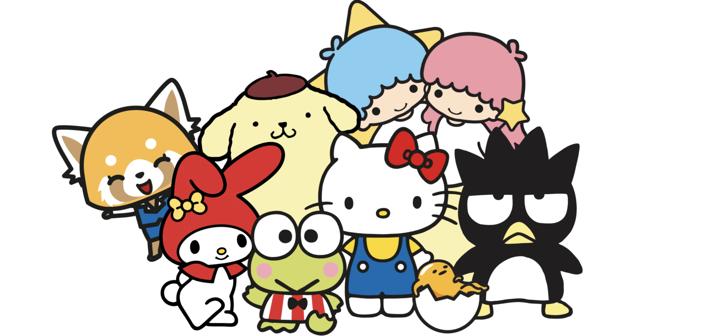

Sanrio Characters

Sanrio, a Japanese company, is responsible for the creation of multiple different animated characters. Some of the most well known are Hello Kitty and Melody. The name, Sanrio, comes from the Japanese meaning of three. This company promotes the idea of friendship and the fact that small gifts can make a big difference in peoples' lives.
By incorperating big eyes and bright colors, the characters from this company are adorable. This is something known as kwaii.
Many people love Sanrio. Perhaps it's because of the adorable, fluffy characters that the company invents.
The characters created by Sanrio all have their own unique charm.
All these Sanrio characters show the Japanese cultutre of warmth, friendship, and hope. They signify the importance of caring and loving others
Click to go to next page